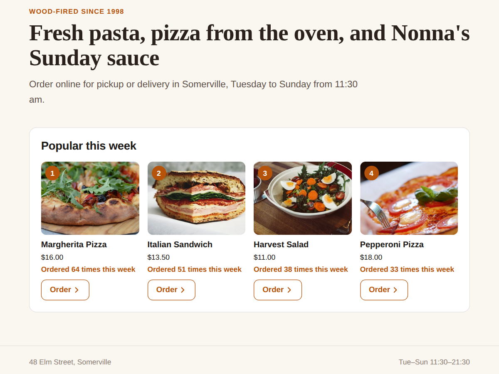

Popular Dishes: Most Ordered
Show your best sellers, ranked from real orders
- Ranks dishes from your own online orders
- Photo, name, price and an Order button
- Updates by itself, no ribbons to maintain
- Top 10, 30 days, order counts (Premium)

What it does
Your guests already tell you what they love: they order it again and again. Popular Dishes turns those orders into a "Popular this week" section on any page of your site, so new visitors see your real best sellers first.
The widget reads your own online orders, counts how many times each dish was ordered and shows the top ones with photo, name, price and an Order button that opens your online ordering page. When a new favourite takes over, the list changes by itself. There are no "Best Seller" ribbons to add by hand, and nothing goes stale.
Pick a grid of cards, a list or a sliding row, then set the heading, button text, colours and font. On phones the cards turn into compact rows. Before your first orders come in, only you see sample dishes in the editor; visitors see nothing until there is something real to show.
Free plan: your top 3 dishes of the last 7 days, with a small credit link under the widget.
Premium shows up to 10 dishes, ranks the last 30 days or the last 12 months, adds a line like "Ordered 48 times this week", can count shop products too, hides items such as drinks, and removes the credit link.
Only dish totals are used. Nothing about who ordered is stored.
Price
Free
- Top 3 dishes of the last 7 days
- Grid, list or sliding row
- Photo, price and Order button
- Small credit link
Premium
$4/month, yearly 20% off
- Top 10, last 30 days or 12 months
- "Ordered 48 times this week" line
- Shop products too, hide any dish
- Remove the credit link